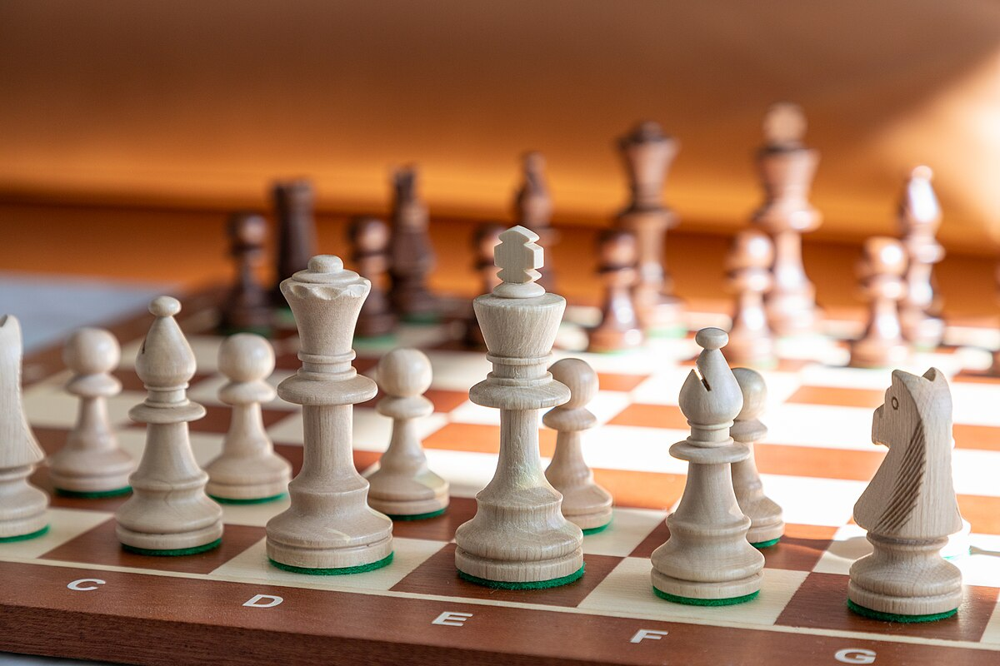
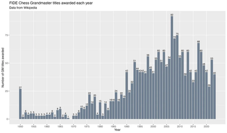
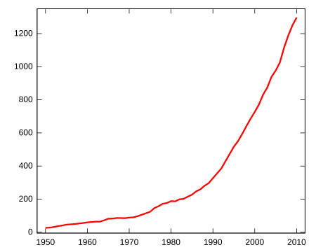
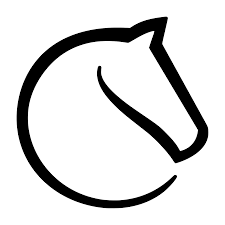

What is "Chess"? What is a "Grandmaster"?
Chess is a strategy game. It is a very well-kown board game and is played all around the globe. Grandmaster in chess is the highest title to achieve in the competitive game.
As for now(31August2024), there are only 2076 Chess Grandmasters in the world! Which is about one in every half million chess players!
And till today, there is still no chess grandmaster from Malaysia!


Since I was 4years old, I was very interested in playing chess. I really enjoy the learning and the playing process. I also like to join competitive tournaments to boost my skills and potential. I am very into the game and I believe that it can be my career one day. The career itself also gives a lot of opportunity to me and the country. I really hope that my dream career comes true one day.

Every day, I practice my skills and tactics online using websites like lichess and chess.com. I sometimes also watch YouTube videos on channels like GothamChess and RemoteChessAcademy.
I try to enter as many chess tournaments as I can during the holidays or the weekends. But because I have other things to do, I sometimes also forget to practice or do some training.
